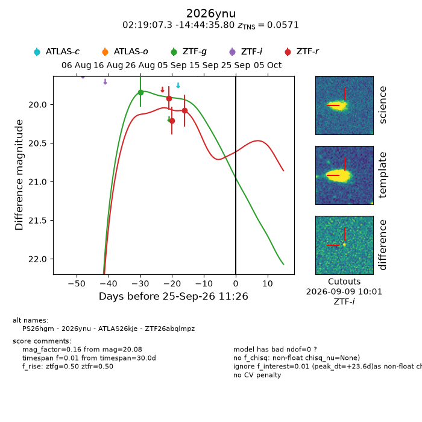
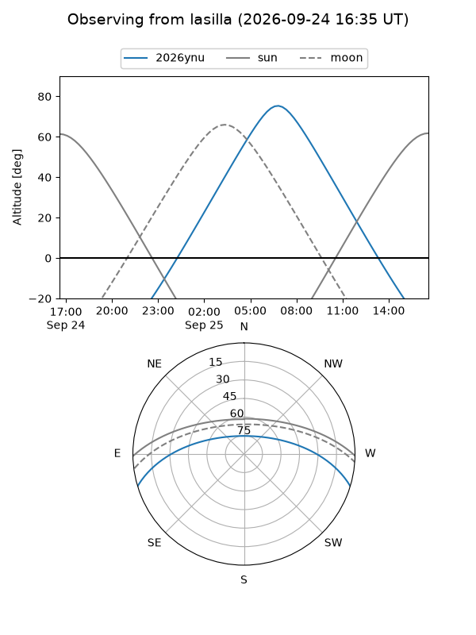
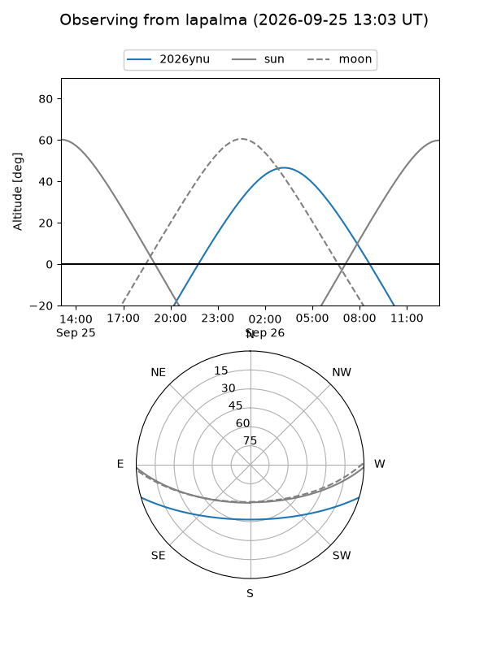
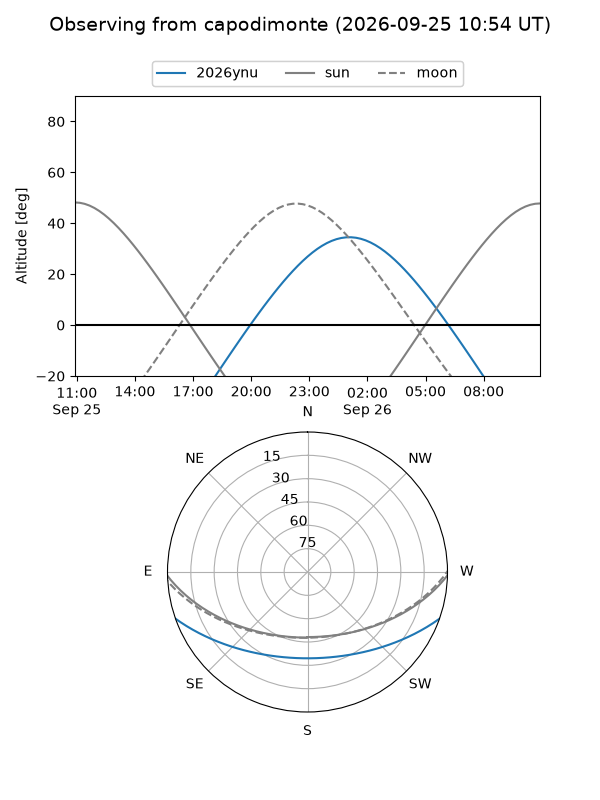
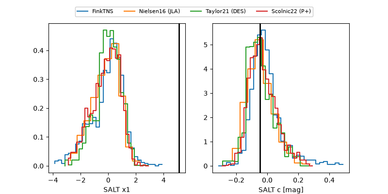

2026ynu
Target 2026ynu at 2026-09-25 11:28
Aliases and brokers:
FINK-ZTF: ztf.fink-portal.org/ZTF26abqlmpz
Lasair-ZTF: lasair-ztf.lsst.ac.uk/objects/ZTF26abqlmpz
ALeRCE-ZTF: alerce.online/object/ZTF26abqlmpz
YSE-PZ: ziggy.ucolick.org/yse/transient_detail/2026ynu
TNS name: wis-tns.org/object/2026ynu
Direct TNS query: direct search
alt names
ZTF26abqlmpz (ztf,fink_ztf)
2026ynu (tns,yse)
PS26hgm (panstarrs)
ATLAS26kje (atlas)
Coordinates:
equatorial (ra, dec) = 34.7803,-14.74328
equatorial (HMS+DMS) = 02:19:07.28,-14:44:35.80
galactic (l, b) = (186.1034,-66.13501)
Flags:
TNS type: SN II
TNS redshift: 0.0571
peak dt: +23.6
Photometry:
last ztfg=19.84, ztfr=20.08
1 ztfg, 3 ztfr detections
Lightcurve

Visibility



Additional plots
